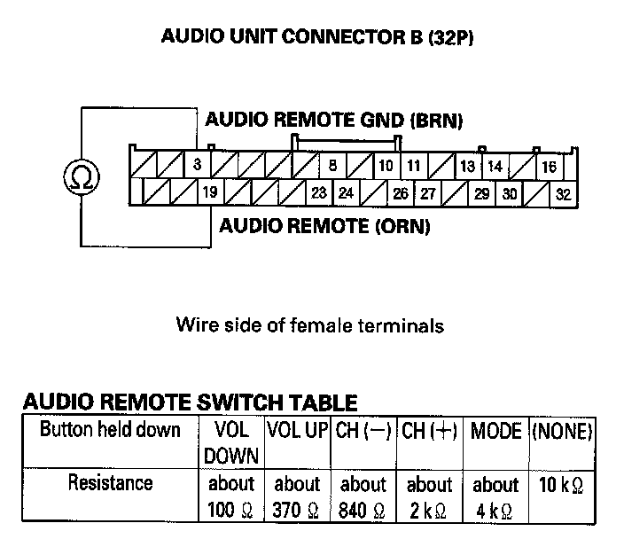
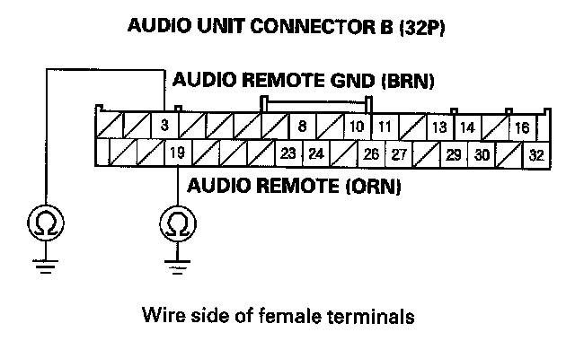

Audio Remote Switch Does Not Work Properly
Audio remote switch does not work properlyNOTE: Always check the connectors for poor connections or loose terminals.
1. Test the audio remote switch.
Is the audio remote switch OK?
YES - Intermittent failure, the audio remote switch and audio unit are OK at this time.
NO - Go to step 2.
2. Check the audio unit operation (volume up, volume down, CH (-), CH (+), MODE).
Is the audio unit operation OK?
YES - Operation is normal.
NO - Go to step 3.
3. Remove the audio unit.
4. Disconnect the audio unit connector B (32P).

5. Reconnect the audio remote switch. While moving the steering wheel about 3/4 turn left and right, measure the resistance between the audio unit connector B (32P) No. 3 and No. 19 terminals as specified in the table.
Is the resistance OK?
YES - Go to step 6.
NO - Repair open or high resistance in the circuit between the audio unit and the audio remote switch. If the wires are OK, replace the cable reel.

6. Check for continuity between body ground and the No. 3 and No. 19 terminals of audio unit connector B (32P) individually.
Is there continuity?
YES - Repair the short to body ground in the circuit between the audio unit and the audio remote switch. If the wires are OK, replace the cable reel.
NO - Replace the audio unit.